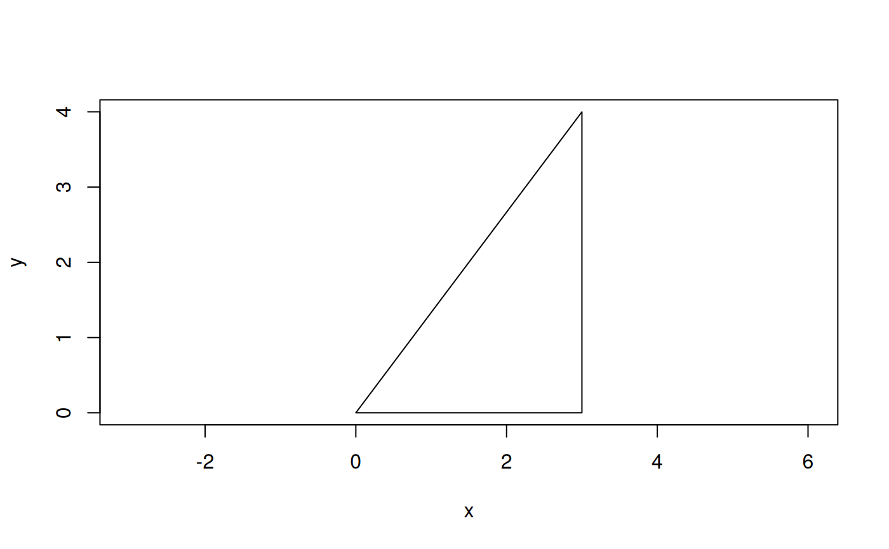

These functions create WKB/WKT geometries from input vertices, and build container geometry types from sub-geometries.
Usage
g_create(
geom_type,
pts = NULL,
as_wkb = TRUE,
as_iso = FALSE,
byte_order = "LSB"
)
g_add_geom(
sub_geom,
container,
as_wkb = TRUE,
as_iso = FALSE,
byte_order = "LSB"
)Arguments
- geom_type
Character string (case-insensitive), one of
"POINT","MULTIPOINT","LINESTRING","POLYGON"(see Note) or"GEOMETRYCOLLECTION".- pts
Numeric matrix of points (x, y, z, m), or
NULLto create an empty geometry. The points can be given as (x, y), (x, y, z) or (x, y, z, m), so the input must have two, three or four columns. Data frame input will be coerced to numeric matrix. Rings for polygon geometries should be closed.- as_wkb
Logical,
TRUEto return the output geometry in WKB format (the default), orFALSEto return a WKT string.- as_iso
Logical,
TRUEto export as ISO WKB/WKT (ISO 13249 SQL/MM Part 3), orFALSE(the default) to export as "Extended WKB/WKT".- byte_order
Character string specifying the byte order when output is WKB. One of
"LSB"(the default) or"MSB"(uncommon).- sub_geom
Either a raw vector of WKB or a character string of WKT.
- container
Either a raw vector of WKB or a character string of WKT for a container geometry type.
Value
A geometry as WKB raw vector by default, or a WKT string if
as_wkb = FALSE. In the case of multiple input points for creating Point
geometry type, a list of WKB raw vectors or character vector of WKT strings
will be returned.
Details
These functions use the GEOS library via GDAL headers.
g_create() creates a geometry object from the given point(s) and returns
a raw vector of WKB (the default) or a character string of WKT. Currently
supports creating Point, MultiPoint, LineString, Polygon, and
GeomteryCollection.
If multiple input points are given for creating Point type, then multiple
geometries will be returned as a list of WKB raw vectors, or character
vector of WKT strings (if as_wkb = FALSE). Otherwise, a single geometry
is created from the input points. Only an empty GeometryCollection can be
created with this function, for subsequent use with g_add_geom().
g_add_geom() adds a geometry to a geometry container, e.g.,
Polygon to Polygon (to add an interior ring), Point to MultiPoint,
LineString to MultiLineString, Polygon to MultiPolygon, or mixed
geometry types to a GeometryCollection. Returns a new geometry, i.e,
the container geometry is not modified.
Note
A POLYGON can be created for a single ring which will be the
exterior ring. Additional POLYGONs can be created and added to an
existing POLYGON with g_add_geom(). These will become interior rings.
Alternatively, an empty polygon can be created with g_create("POLYGON"),
followed by creation and addition of POLYGONs as subgeometries. In that
case, the first added POLYGON will be the exterior ring. The next ones will
be the interior rings.
Only an empty GeometryCollection can be created with g_create(), which
can then be used as a container with g_add_geom(). If given, input points
will be ignored by g_create() if geom_type = "GEOMETRYCOLLECTION".
Examples
# raw vector of WKB by default
g_create("POINT", c(1, 2))
#> [1] 01 01 00 00 00 00 00 00 00 00 00 f0 3f 00 00 00 00 00 00 00 40
# as WKT
g_create("POINT", c(1, 2), as_wkb = FALSE)
#> [1] "POINT (1 2)"
# or convert in either direction
g_create("POINT", c(1, 2)) |> g_wk2wk()
#> [1] "POINT (1 2)"
g_create("POINT", c(1, 2), as_wkb = FALSE) |> g_wk2wk()
#> [1] 01 01 00 00 00 00 00 00 00 00 00 f0 3f 00 00 00 00 00 00 00 40
# create multipoint from a matrix of xyz points
x <- c(9, 1)
y <- c(1, 9)
z <- c(0, 10)
pts <- cbind(x, y, z)
mp <- g_create("MULTIPOINT", pts)
g_wk2wk(mp)
#> [1] "MULTIPOINT (9 1 0,1 9 10)"
g_wk2wk(mp, as_iso = TRUE)
#> [1] "MULTIPOINT Z ((9 1 0),(1 9 10))"
# create an empty container and add subgeometries
mp2 <- g_create("MULTIPOINT")
mp2 <- g_create("POINT", c(11, 2)) |> g_add_geom(mp2)
mp2 <- g_create("POINT", c(12, 3)) |> g_add_geom(mp2)
g_wk2wk(mp2)
#> [1] "MULTIPOINT (11 2,12 3)"
# plot WKT strings or a list of WKB raw vectors with wk::wk_plot()
pts <- c(0, 0, 3, 0, 3, 4, 0, 0)
m <- matrix(pts, ncol = 2, byrow = TRUE)
g <- g_create("POLYGON", m, as_wkb = FALSE)
wk::wkt(g) |> wk::wk_plot()
